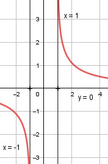

Aufgabe 169 x + 1 f(x) = ln (-------) = ln [(x + 1) * (x - 1)-1] x - 1 Produkt- und Kettenregel erste Ableitung: u = x + 1, u' = 1 v = (x - 1)-1 Kettenregel: v' = -(x - 1)-2 g'(x) = 1 * (x - 1)-1 + (-(x - 1)-2 * (x + 1)) 1 x + 1 g'(x) = ------- - --------- (x - 1) (x - 1)2 x - 1 - x - 1 2 g'(x) = --------------- = - -------- (x - 1)2 (x - 1)2 g'(x) = -2 * (x - 1)-2 -2 * (x - 1)-2 -2 * (x - 1) f'(x) = ----------------- = ------------------ x + 1 (x + 1)*(x - 1)2 ------- x - 1 -2 f'(x) = ---------- = -2 * (x2 - 1)-1 x2 - 1 Produkt- und Kettenregel zweite Ableitung: f''(x) = -2 * (-2x) * (x2 - 1)-2 4x f''(x) = ---------- (x2 - 1)2 Zur Beurteilung, ob f'''(x) ≠ 0: (Begründung siehe Aufgabe 105) u = 4 * x, u' = 4 u' 4 f'''(x) = --- = ----------- ist v (x2 - 1)2 ≠ 0 für alle x ≠ ± 1 x + 1 -------- muss wegen ln > 0 sein. x – 1 x + 1 -------- > 0, wenn x + 1 > 0 und x – 1 > 0 x – 1 x + 1 > 0 |-1 x > -1 x – 1 > 0 |+1 x > 1 L1 = 1 < x < ∞ oder x + 1 < 0 |-1 x < -1 x – 1 < 0 |+1 x < 1 L2 = -∞ < x < -1 Definitionsbereich: -∞ < x < -1 und 1 < x < ∞ Polstelle: x – 1 = 0 |+1 x = 1 Für x --> 1 geht f(x) --> ∞ Senkrechte Asymptote: x + 1 0 Für x --> -1 geht ln -------- --> ln ----- --> -∞ x – 1 -2 Waagerechte Asymptote: 2 x + 1 : x – 1 = 1 + ------ -(x – 1) x - 1 --------- 2 2 ln (1 + -----) --> 0 für x --> ± ∞ x - 1 Wertebereich: -∞ < f(x) < ∞ und f(x) ≠ 0 Symmetrie zur y-Achse bzw. zum Punkt (0|0): 1 - x 1 - x f(-x) = ln --------- = ln ------- 1 - (-x) 1 + x 1 + x 1 + x f(-x) = ln ( ------- )-1 = - ln ------- ≠ f(x) 1 - x 1 - x --> keine Achsensymmetrie 1 + x 1 + x -f(-x) = -(-ln -------) = ln ------- = f(x) 1 - x 1 - x --> Punktsymmetrie Nullstellen: f(x) = 0 1 + x ln (-------) = 0 1 - x 1 + x ------- = e0 = 1 |+(x - 1) 1 - x 1 + x = 1 - x |+x 1 + 2x = 1 |-1 2x = 0 |:2 x = 0 --> keine Lösung, liegt außerhalb des Definitionsbereiches --> keine Nullstellen Schnittpunkt mit der y-Achse: x = 0 x = 0 liegt nicht im Definitionsbereich --> kein Schnittpunkt Extrempunkte: f'(x) = 0 2 - ------- = 0 |*(x2 - 1) x2 - 1 -2 = 0 --> Widerspruch --> keine Extrempunkte Wendepunkte: f''(x) = 0 4x ---------- = 0 |*(x2 - 1)2 (x2 - 1)2 4x = 0 |:4 x = 0 --> keine Lösung, liegt außerhalb des Definitionsbereiches --> keine Wendepunkte Graph:
